Prática 2.2 — Condutividade Molar em Diluição Infinita de Eletrólitos Fortes
O paradoxo: diluir aumenta a condutividade POR MOL
0:00 · 78s · 6 ações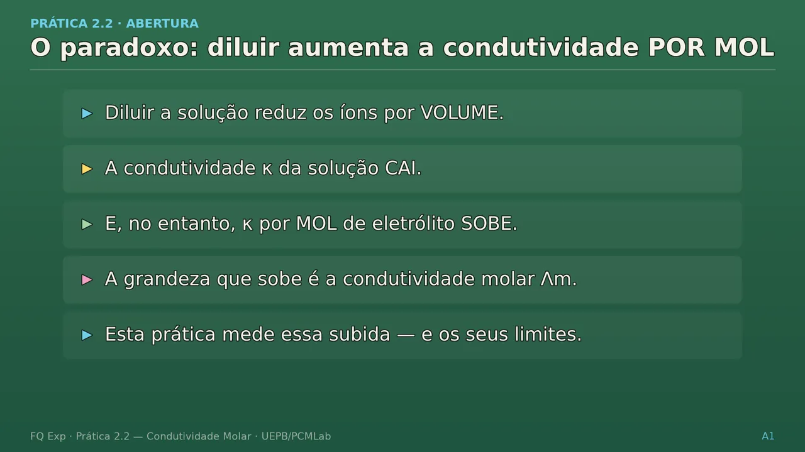
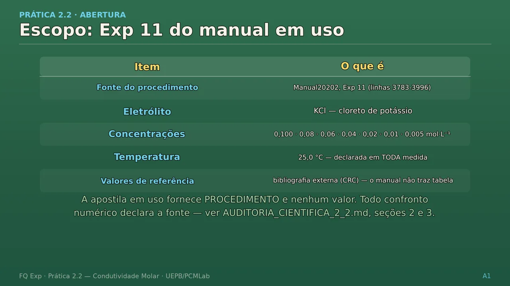
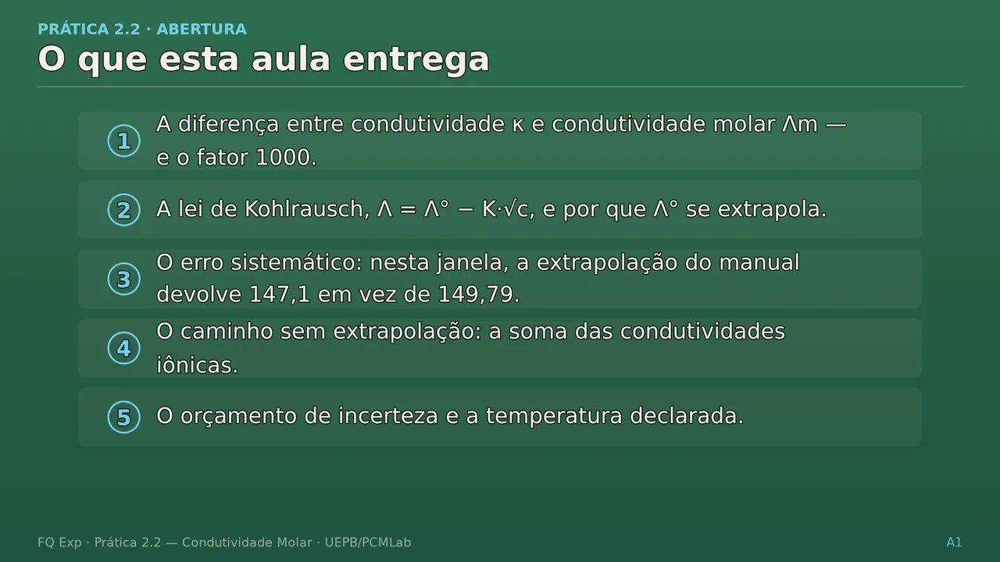
Dilua a solução: menos íons por centímetro cúbico. E, ainda assim, cada mol de eletrólito passa a conduzir MAIS corrente. A condutividade cai, mas a condutividade por mol sobe. Esta prática mede essa subida.
É a Prática dois ponto dois, o experimento onze do manual em uso: condutividade molar em diluição infinita de eletrólitos fortes. O eletrólito é o cloreto de potássio, de zero vírgula dez a zero vírgula zero zero cinco mol por litro, a vinte e cinco graus.
Três coisas saem daqui. A diferença entre condutividade e condutividade molar, onde o fator mil se perde. A lei de Kohlrausch, e o motivo de extrapolar em vez de medir. E um resultado desconfortável: nesta janela, a extrapolação que o manual pede devolve o valor errado.
Resistência, condutância, condutividade
1:17 · 120s · 10 ações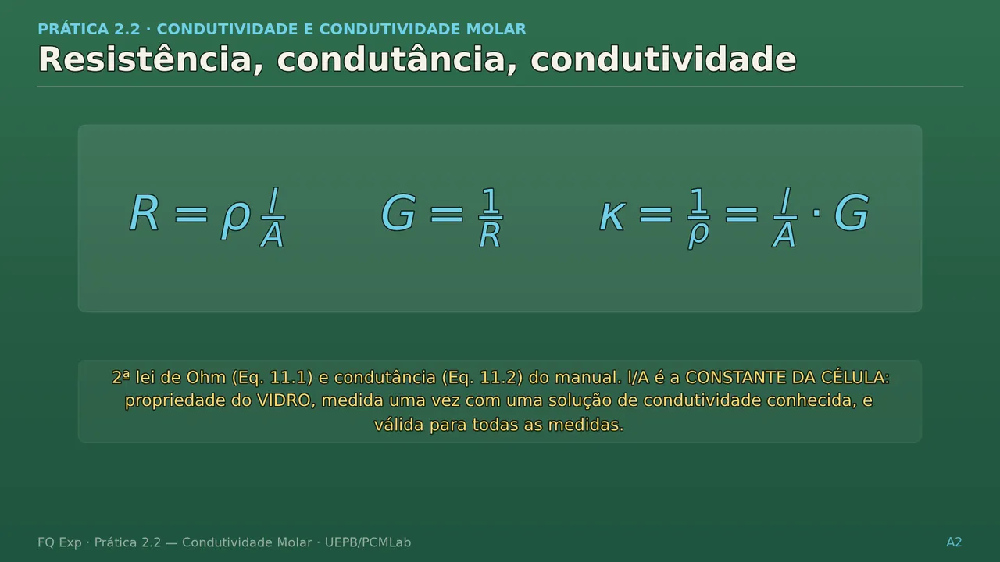
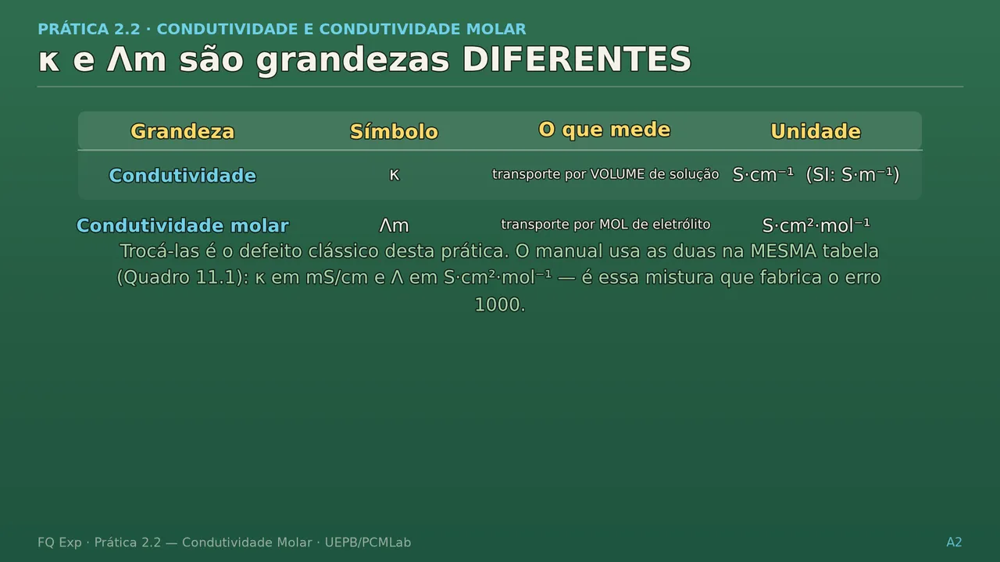
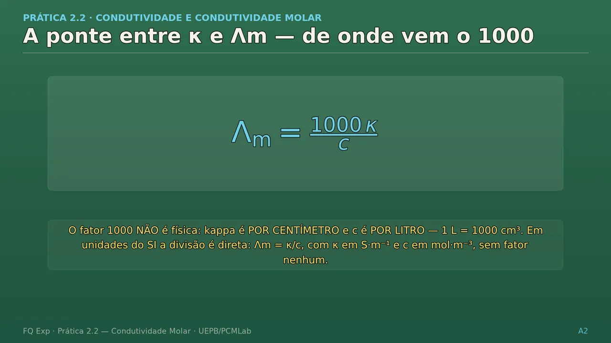
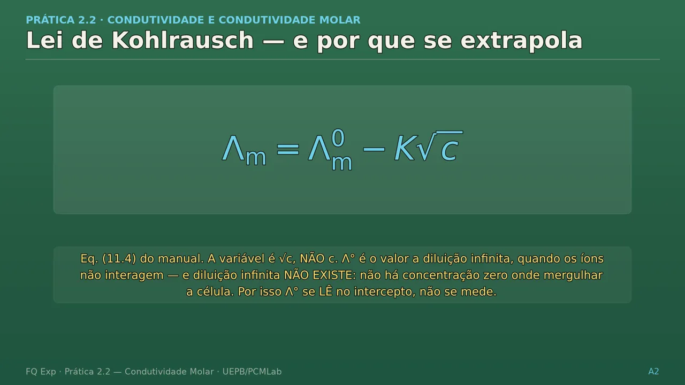
Para um condutor de comprimento l e área A, a segunda lei de Ohm dá R igual a resistividade vezes l sobre A. A condutância é o inverso da resistência; a condutividade é o inverso da resistividade. Então kappa é l sobre A vezes a condutância — e l sobre A é a constante da célula, propriedade do vidro, medida com o padrão.
Condutividade mede transporte por VOLUME, em siemens por centímetro. Condutividade molar, lambda m, mede transporte por MOL de eletrólito, em siemens centímetro quadrado por mol. São grandezas diferentes. Trocá-las é o defeito clássico daqui.
A ponte é uma divisão: lambda m é mil vezes kappa dividido pela concentração — kappa em siemens por centímetro, concentração em mol por litro. De onde vem o mil? Só de unidade: um litro tem mil centímetros cúbicos. Em SI, ele desaparece.
A lei de Kohlrausch: para eletrólitos fortes e diluídos, a condutividade molar é retilínea contra a RAIZ da concentração. Lambda m igual a lambda zero, menos K vezes raiz de c. Repare bem: a variável é raiz de c, não c.
▸ MONITOR(A) DO PCM LAB: Professor, se diluição infinita não existe, o valor que a gente lê no gráfico é escolha nossa? Ele não foi medido em lugar nenhum?
Por que a diluição infinita não é medida
3:18 · 124s · 10 ações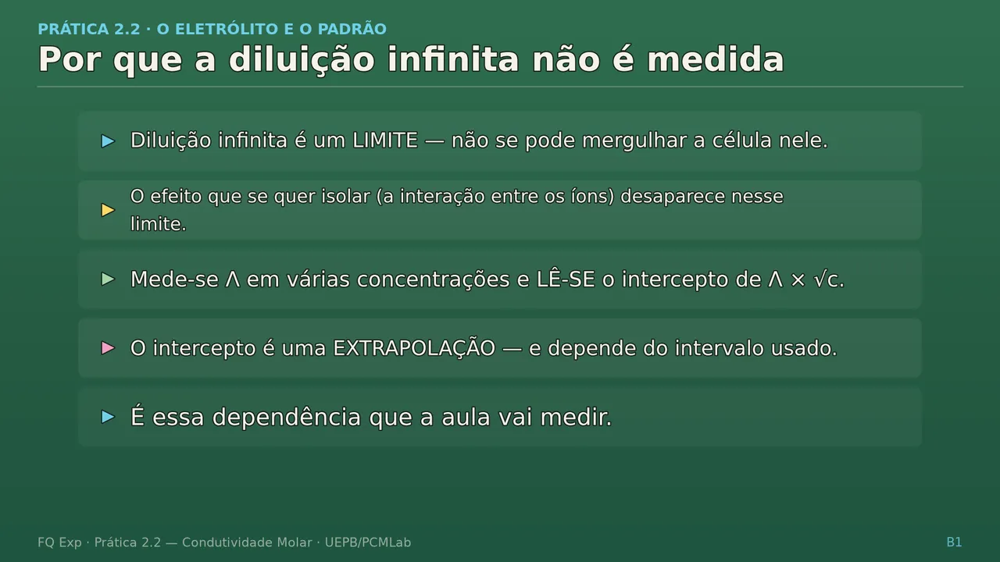
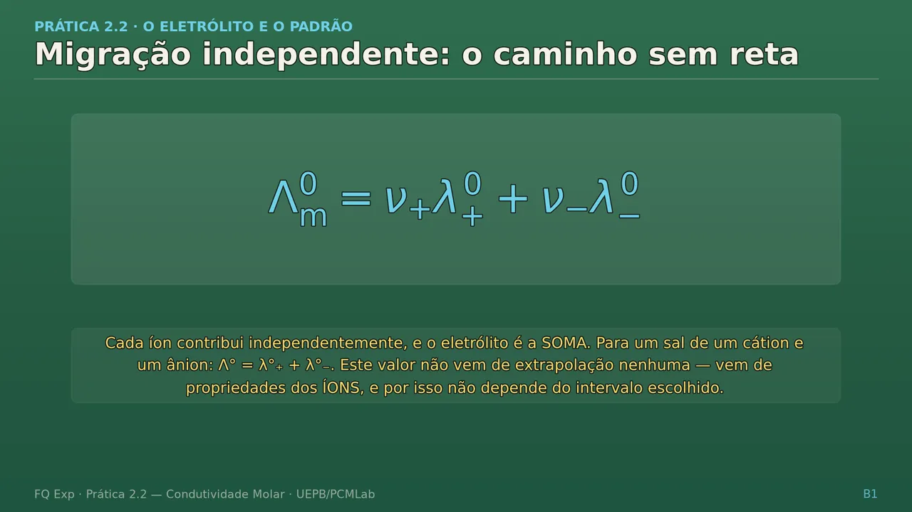
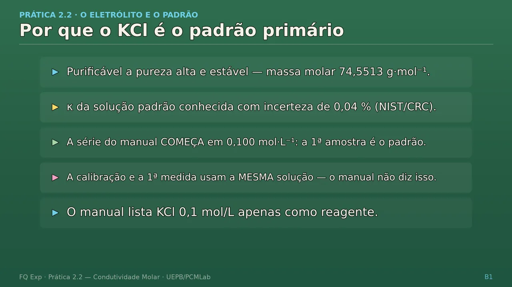
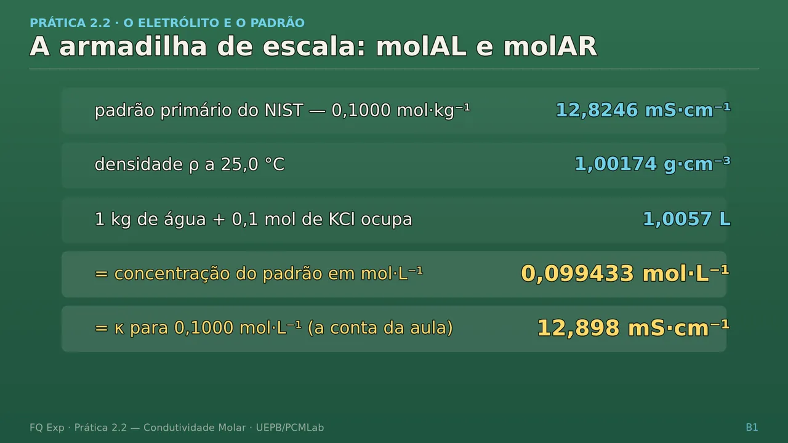
Por que extrapolar em vez de medir? Porque diluição infinita não existe: não há solução de concentração zero onde mergulhar a célula. E o efeito que queremos isolar — a interação entre os íons — DESAPARECE justamente ao aproximar-se dela. Lê-se o intercepto da reta.
Existe um caminho que não precisa de reta. Os íons migram independentemente: lambda zero de um eletrólito é a soma das contribuições dos seus íons. É só somar — e essa soma se confere contra a tabela sem extrapolar nada.
O cloreto de potássio é o padrão primário mundial da condutividade: é purificável a pureza alta e tem condutividade conhecida a quatro centésimos por cento. Por isso a série começa em zero vírgula dez — é a primeira amostra e também o padrão.
Uma armadilha de escala quase nunca declarada. Os padrões primários do NIST são MOLAIS: mol por quilo de água. O manual trabalha em MOLAR. Zero vírgula um molal de cloreto de potássio é zero vírgula zero nove nove quatro molar, e a densidade faz a conversão.
▸ MONITOR(A) DO PCM LAB: Espera. O padrão que vem no frasco é mol por quilo de água? Então eu preciso converter antes de comparar com a minha solução?
A lei de Kohlrausch é uma lei LIMITE
5:21 · 68s · 4 ações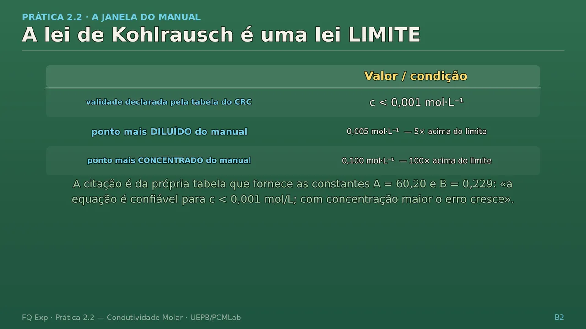
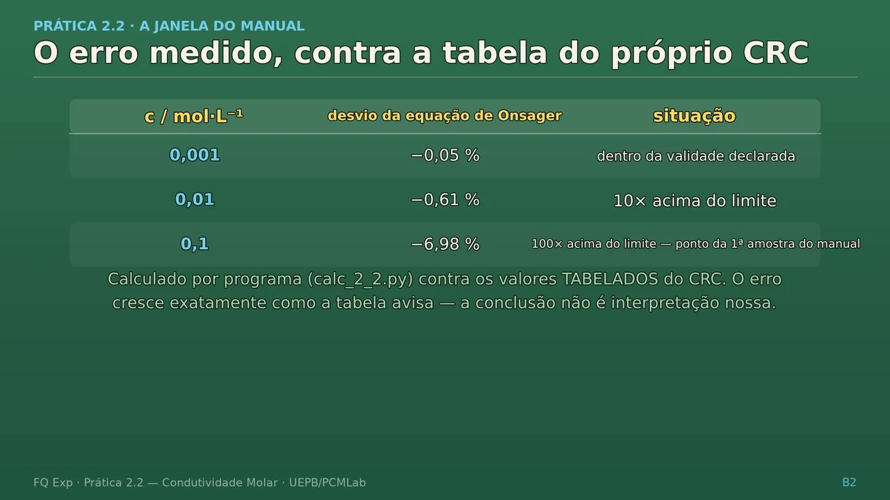
O problema central: a lei de Kohlrausch é uma lei LIMITE. A tabela que fornece as suas constantes diz, com todas as letras, que a equação é confiável abaixo de zero vírgula zero zero um mol por litro. O manual começa em zero vírgula zero zero cinco.
E isso é medido, não é interpretação. Comparando a equação de Onsager com a tabela do cloreto de potássio: cinco centésimos por cento em zero vírgula zero zero um mol por litro; seis décimos em zero vírgula zero um; e SETE por cento em zero vírgula um.
Material e reagentes
6:29 · 56s · 4 ações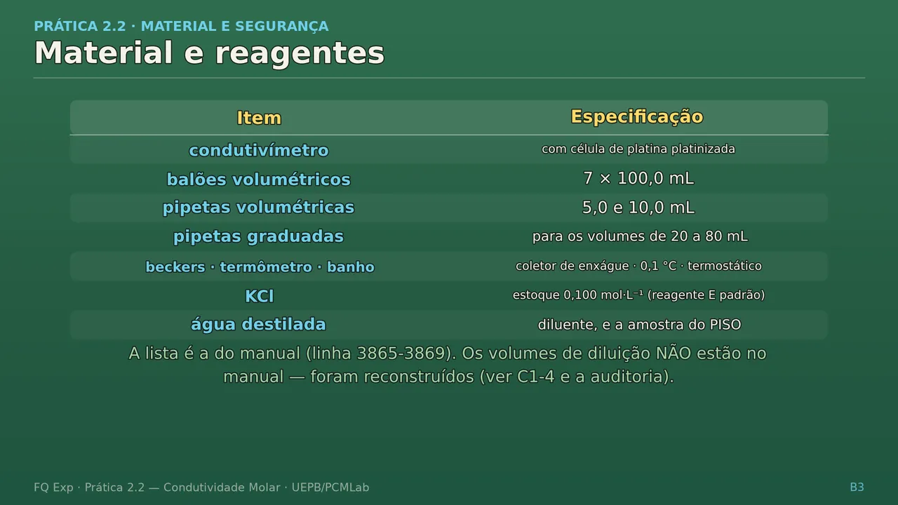
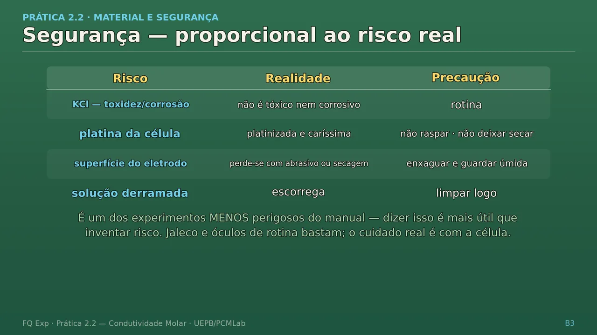
Material: condutivímetro com célula de platina, sete balões de cem mililitros, pipetas volumétricas de cinco e dez mililitros, pipetas graduadas para os volumes maiores, beckers, termômetro e banho termostático. Reagentes: cloreto de potássio zero vírgula cem mol por litro e água destilada.
Segurança, e sejamos honestos: é um dos experimentos menos perigosos do manual. O cloreto de potássio não é tóxico nem corrosivo. O risco é a platina da célula: raspada ou seca ao ar, perde a superfície.
Passo 1 · enxaguar — o manual dá metade
7:25 · 124s · 10 ações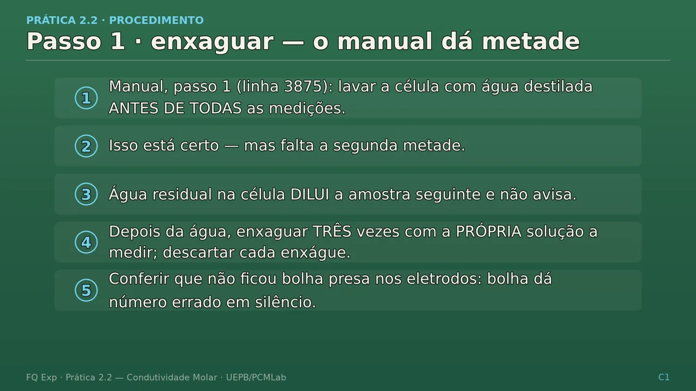
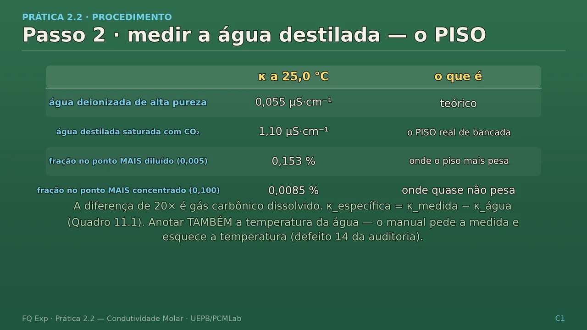
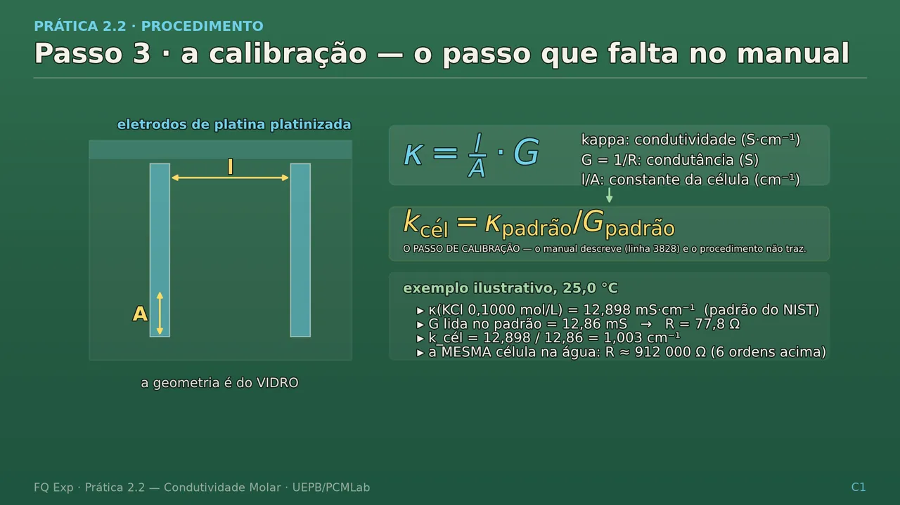
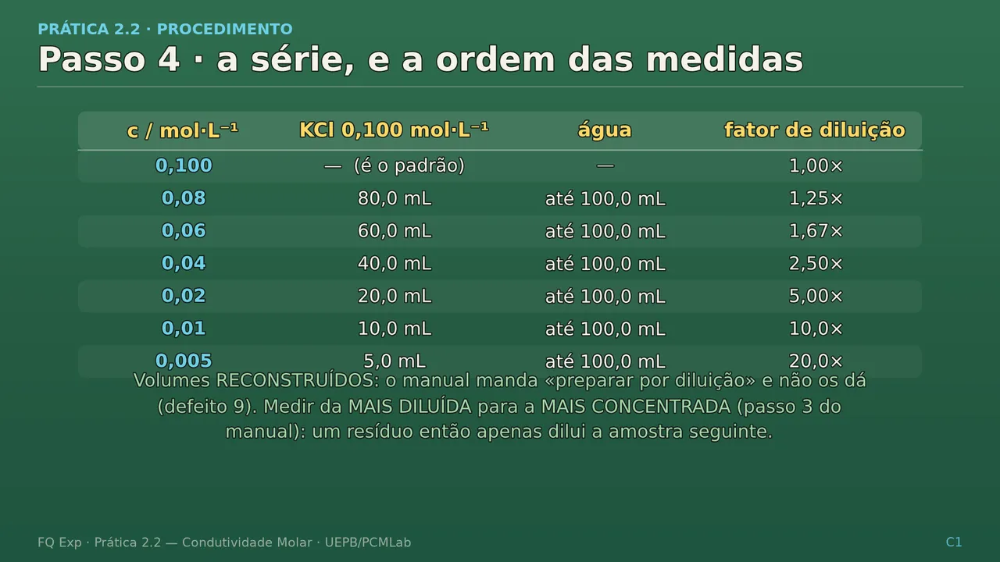
Primeiro passo: enxaguar a célula. O manual manda lavar com água antes de todas as medições, e está certo — mas falta metade. Água residual dilui a amostra seguinte. Depois da água, enxágue TRÊS vezes com a própria solução a medir. E cuidado com bolha presa nos eletrodos: ela dá número errado sem avisar.
Segundo passo: meça a água destilada, e anote a temperatura dela. Água exposta ao ar dissolve gás carbônico e chega a um vírgula um microsiemens por centímetro. Esse é o PISO da medida, subtraído de todas as outras — um décimo e meio por cento no ponto mais diluído.
Terceiro passo: a calibração — o passo que o manual descreve e ESQUECE no procedimento. Mergulhe a célula no padrão zero vírgula cem mol por litro e leia a condutância: a constante da célula é a condutividade do padrão dividida por ela.
▸ MONITOR(A) DO PCM LAB: E se a água daqui estiver pior que essa? Como eu sei se o meu piso está bom, ou se ele já está estragando a medida mais fraca?
Quarto passo: a série. Dilua a estoque em balão de cem mililitros: oitenta, sessenta, quarenta, vinte, dez e cinco mililitros. Meça da MAIS DILUÍDA para a mais concentrada: um resíduo então apenas dilui a amostra seguinte.
A planilha do Quadro 11.1 — exemplo ilustrativo, 25,0 °C
9:29 · 190s · 14 ações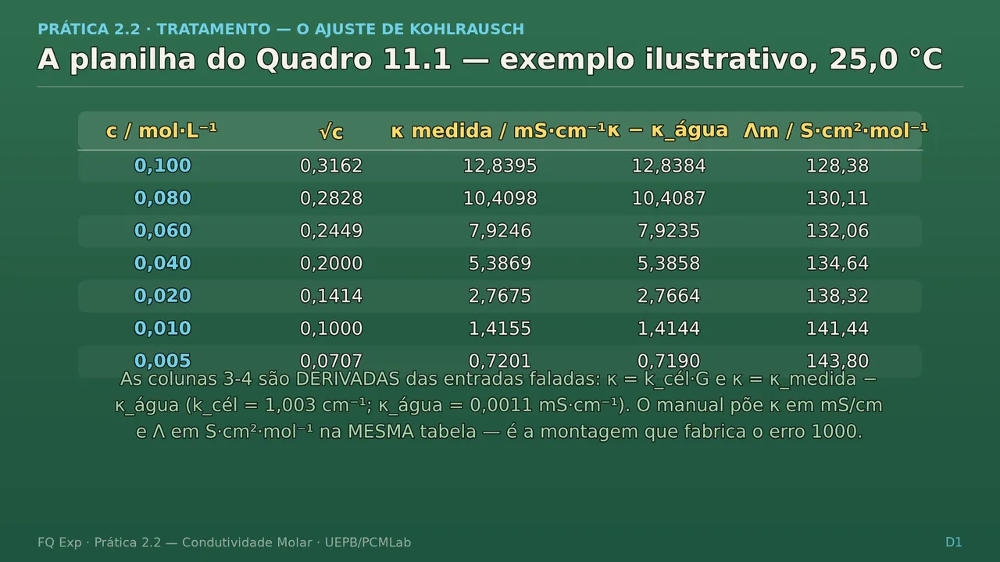
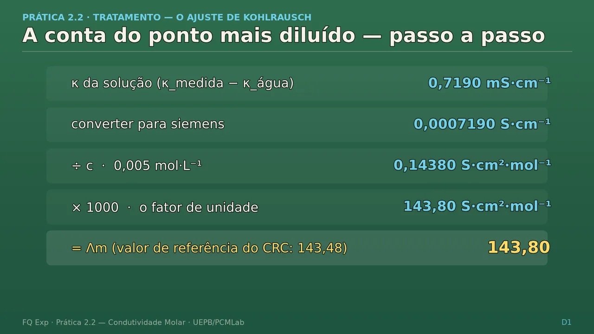
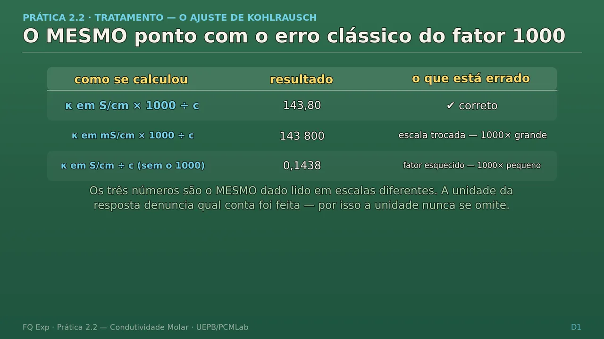
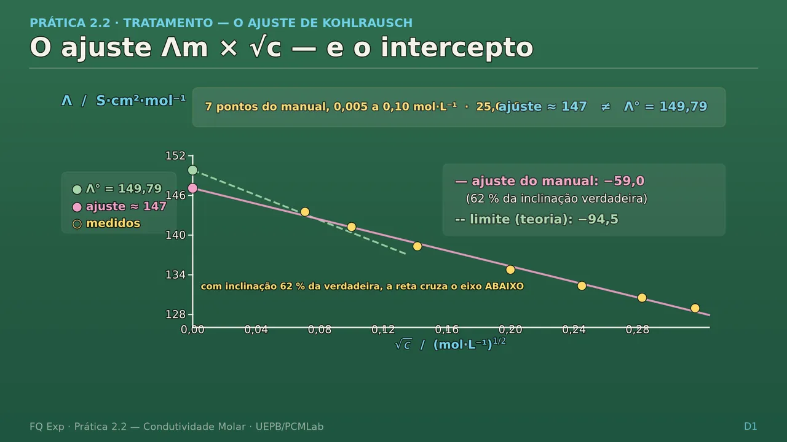
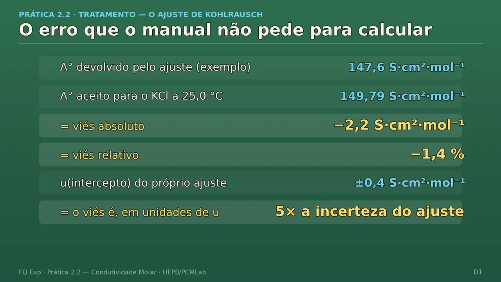
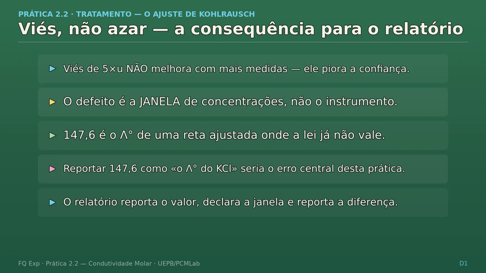
A planilha, a vinte e cinco graus. Seis colunas: concentração, raiz dela, condutividade medida, a da água, a da solução — medida menos água — e a condutividade molar. O manual pede estas, e as mistura em duas escalas no mesmo quadro.
A conta do ponto mais diluído. Condutividade da solução: zero vírgula sete um nove milisiemens por centímetro. Converta para siemens: zero vírgula zero zero zero sete um nove. Divida por zero vírgula zero zero cinco e multiplique por mil. Dá cento e quarenta e três vírgula oito.
O mesmo ponto, com o erro clássico. Mantendo a condutividade em MILIsiemens, a mesma fórmula devolve cento e quarenta e três MIL. Esquecendo o fator mil, volta zero vírgula um quatro três. Os três números são o MESMO dado em escalas diferentes.
Agora o gráfico: raiz da concentração no horizontal, condutividade molar no vertical. Se a lei de Kohlrausch valer, os sete pontos formam uma reta e o intercepto é o lambda zero. Ajustando o exemplo, deu cento e quarenta e sete vírgula seis, com R ao quadrado de zero vírgula nove nove quatro.
E aqui a conta que o manual não pede. O valor aceito para o cloreto de potássio a vinte e cinco graus é cento e quarenta e nove vírgula oito. O ajuste devolveu cento e quarenta e sete vírgula seis: dois vírgula dois ABAIXO. A incerteza do ajuste é de quatro décimos — o erro é CINCO vezes maior.
Cinco vezes a incerteza: isso não é azar de medida, é viés. Repetir a série não conserta: o defeito não está na bancada, está na JANELA. Esse valor não é o lambda zero do cloreto de potássio.
▸ MONITOR(A) DO PCM LAB: Deixa eu ver se entendi: eu fiz tudo certo na bancada e o valor ainda sai errado, só porque escolhi as concentrações?
Pela inclinação: 59,0 contra 94,5 da teoria
12:40 · 64s · 4 ações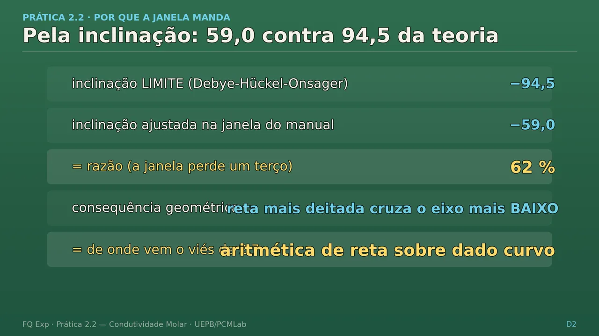
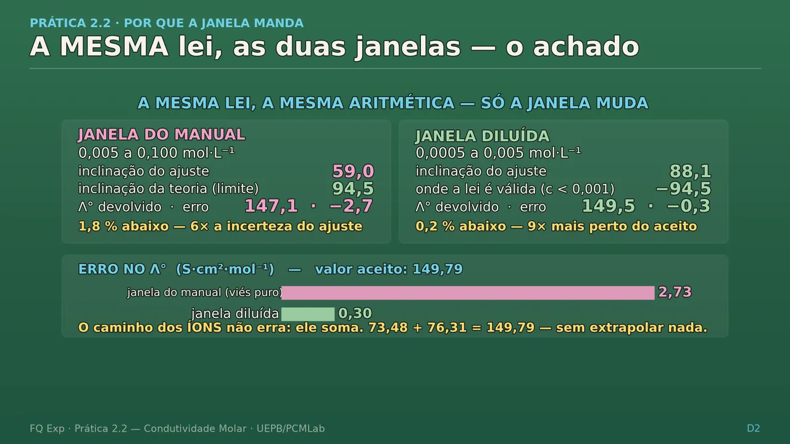
Por que a janela estraga o intercepto? Pela inclinação. A teoria de Debye, Hückel e Onsager dá a inclinação-limite: noventa e quatro vírgula cinco. Ajustando os sete pontos do manual, deu cinquenta e nove — sessenta e dois por cento. Reta mais deitada cruza o eixo mais BAIXO: é daí que vêm os dois vírgula sete de viés.
E a prova de que a lei está certa e a janela é que está errada: a MESMA lei, com a MESMA aritmética, sobre zero vírgula zero zero zero cinco a zero vírgula zero zero cinco mol por litro, devolve cento e quarenta e nove vírgula cinco — três décimos do aceito. Nove vezes mais perto, só trocando a janela.
Λ°(KCl) pela soma dos íons — sem extrapolar
13:44 · 100s · 8 ações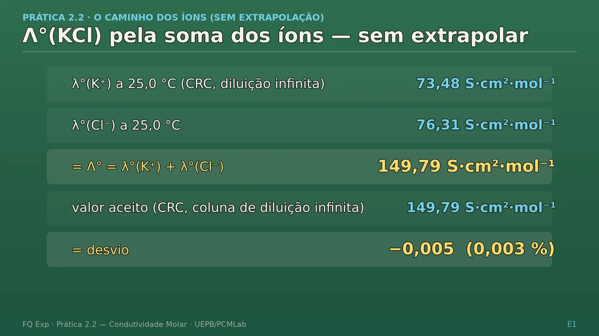
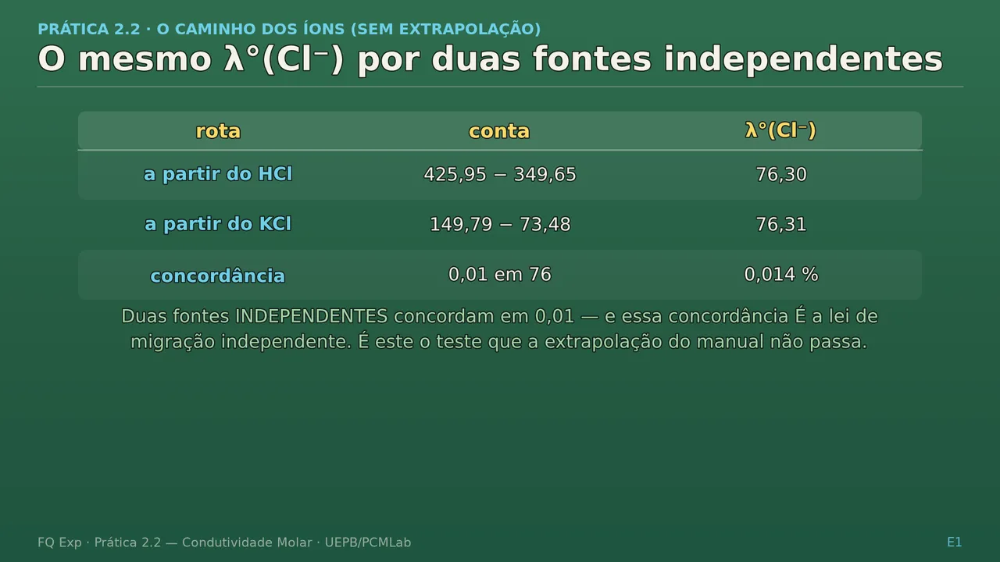
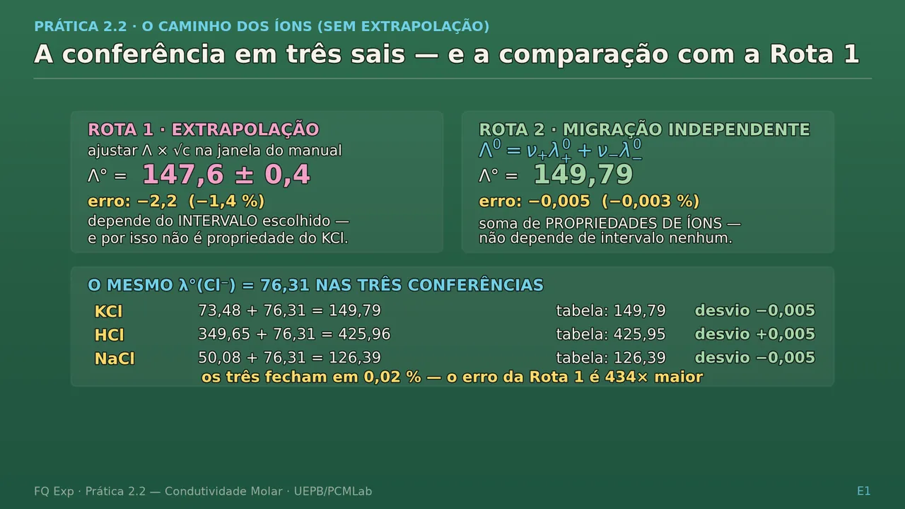
Há um caminho que não extrapola nada, e é o que a pergunta cinco pede: as condutividades iônicas limites. Cada íon contribui com a sua parte, e o eletrólito é a soma. Potássio, setenta e três vírgula cinco; cloreto, setenta e seis vírgula três. Soma: cento e quarenta e nove vírgula oito.
O cloreto aparece em duas fontes independentes. Do ácido clorídrico: quatrocentos e vinte e cinco vírgula nove menos o hidrogênio dá setenta e seis vírgula três zero. Do cloreto de potássio: cento e quarenta e nove vírgula oito menos o potássio dá setenta e seis vírgula três um. Concordam em um centésimo.
Os mesmos íons fecham em três sais, com desvios abaixo de três centésimos. Compare com o erro da extrapolação, dois vírgula dois: é quatrocentas vezes maior. O caminho dos íons não erra porque não extrapola — ele soma, e a soma se confere.
▸ MONITOR(A) DO PCM LAB: Então o cloreto sai de duas contas diferentes e dá o mesmo número? Isso é um teste de verdade, e não um ajuste?
O «2 %/°C» é uma tangente, não uma constante
15:24 · 80s · 6 ações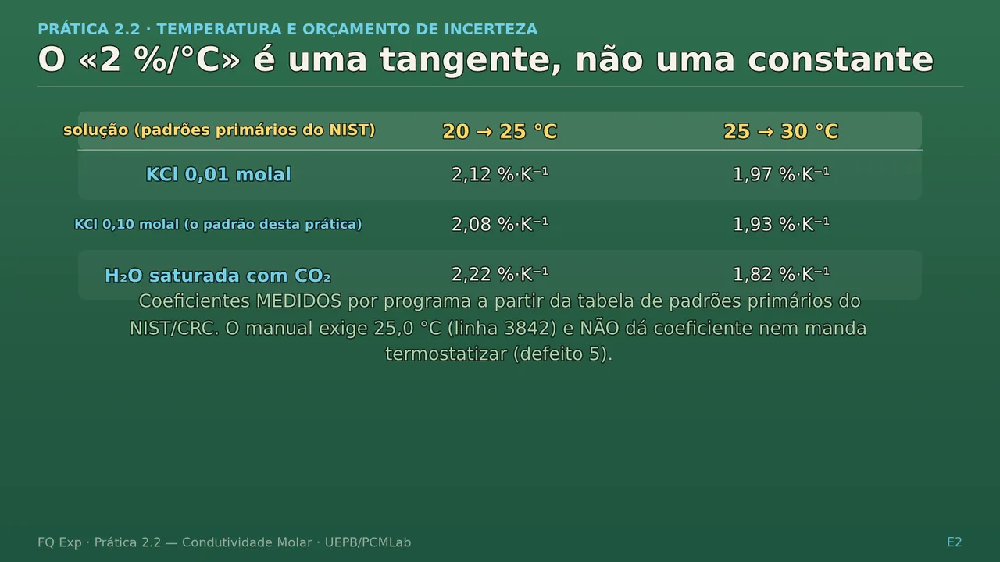
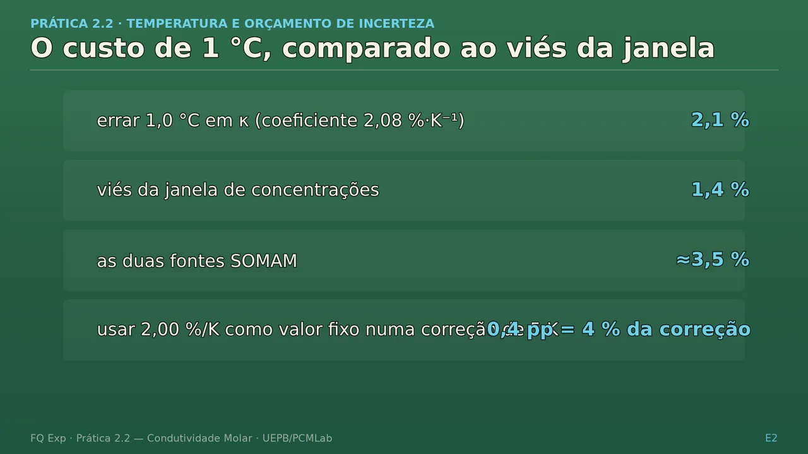
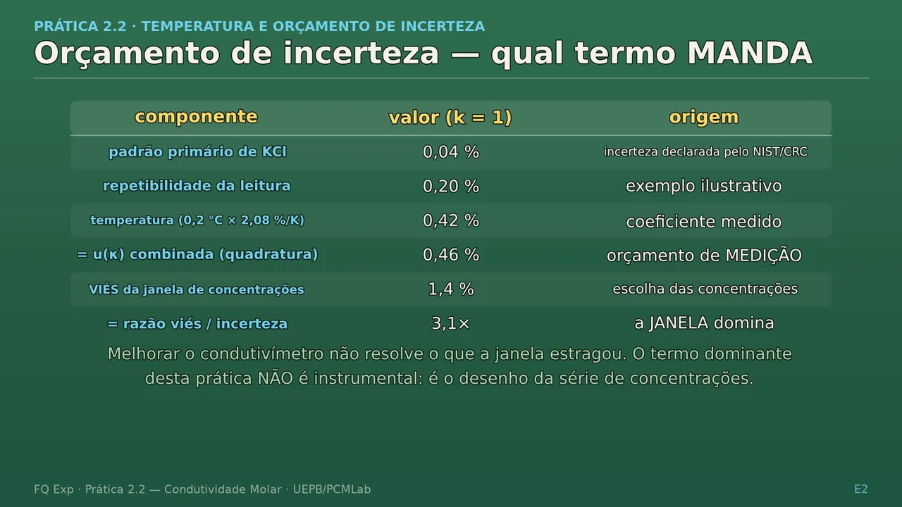
A temperatura, quantificada. O manual exige vinte e cinco graus e não dá coeficiente. Os padrões do NIST dão: entre vinte e vinte e cinco graus, a condutividade da solução-padrão sobe dois vírgula zero oito por cento por grau. E não é constante — entre vinte e cinco e trinta, cai para um vírgula nove três.
Errar um grau custa dois por cento. Compare com o viés da janela: um e meio por cento. As duas fontes são da MESMA ordem e elas SOMAM. E usar o coeficiente de bolso de dois por cento como se fosse constante já erra quatro por cento na correção.
E o orçamento, porque números separados não decidem nada. Somando o padrão primário, a repetibilidade e a temperatura, a incerteza da MEDIÇÃO dá meio por cento. O viés da janela é um e meio por cento: três vezes toda a bancada.
O contraste da pergunta 3: e se fosse um eletrólito FRACO?
16:43 · 143s · 11 ações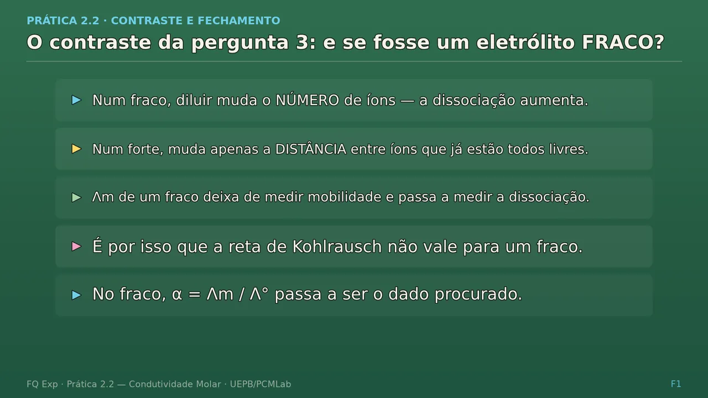
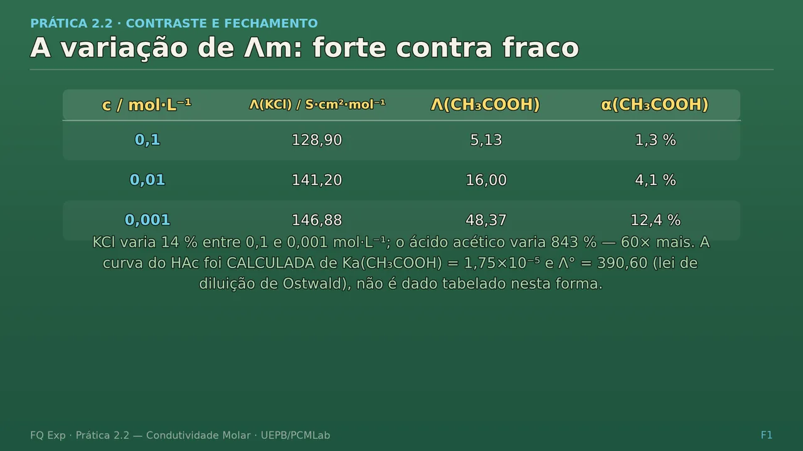
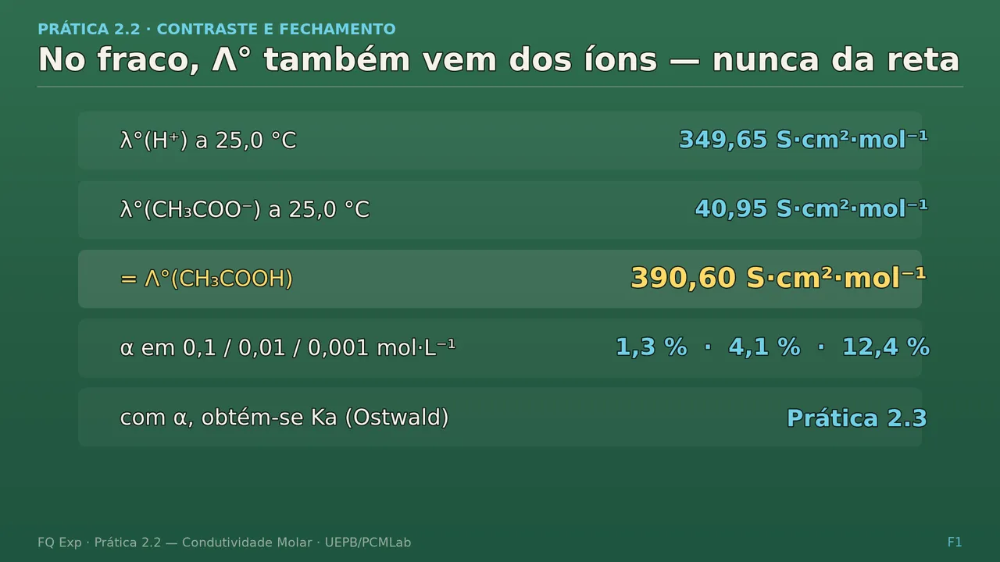
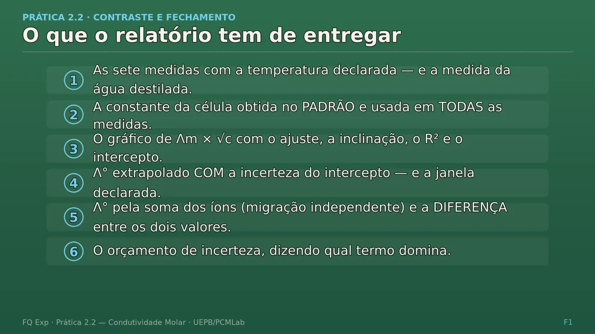
Falta o contraste da pergunta três: e se fosse um eletrólito fraco? Num fraco, diluir muda o NÚMERO de íons, porque a dissociação aumenta. A condutividade molar passa a medir o grau de dissociação.
Os números. Entre zero vírgula um e zero vírgula zero zero um mol por litro, a condutividade molar do cloreto de potássio varia catorze por cento. A do ácido acético varia oitocentos e quarenta. Sessenta vezes mais. No fraco, alfa é lambda m dividido por lambda zero.
No fraco, o lambda zero também vem dos íons: hidrogênio mais acetato dá trezentos e noventa vírgula seis. Ácido fraco não se extrapola: mede-se alfa e, com alfa, a constante de dissociação. É a Prática dois ponto três.
Auto-teste. Pause e responda. Um: a diferença entre condutividade e condutividade molar, em unidade. Dois: de onde vem o fator mil e quando ele desaparece. Três: por que o lambda zero é extrapolado e não medido. Quatro: por que a janela devolve valor baixo. Cinco: como obter lambda zero sem extrapolar.
PAUSE E PENSE Pause o vídeo e responda antes de continuar.
O relatório entrega: as sete medidas com a temperatura; a constante da célula obtida no padrão e usada em todas; o gráfico com o ajuste e o R ao quadrado; o lambda zero extrapolado com a incerteza; e o lambda zero pela soma dos íons, com a diferença entre os dois declarada.